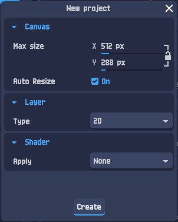
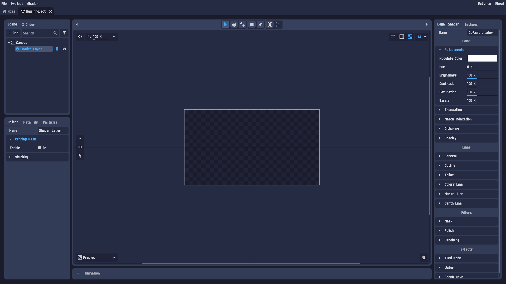
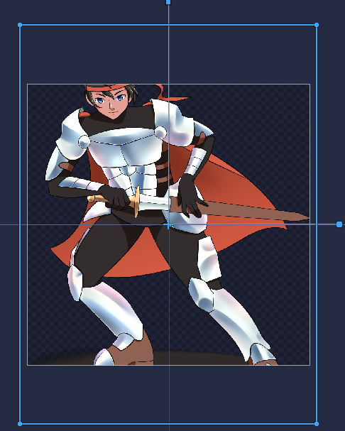
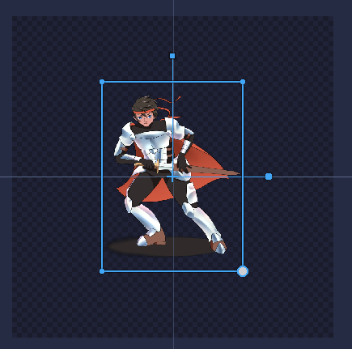
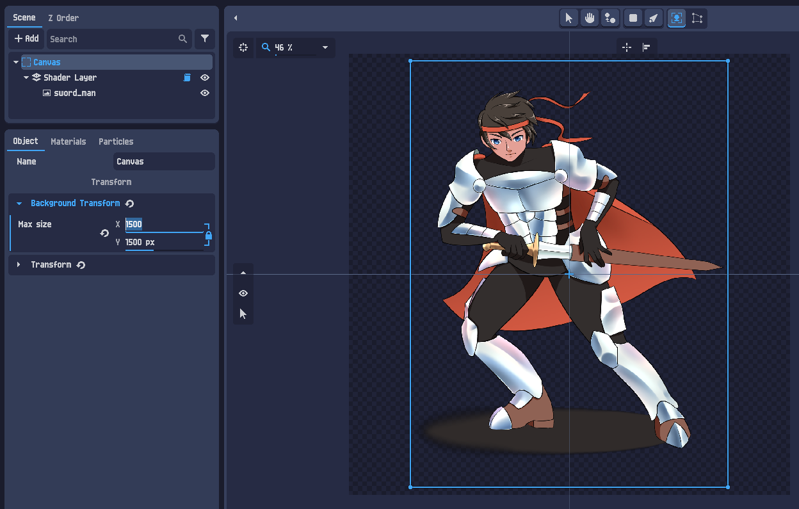
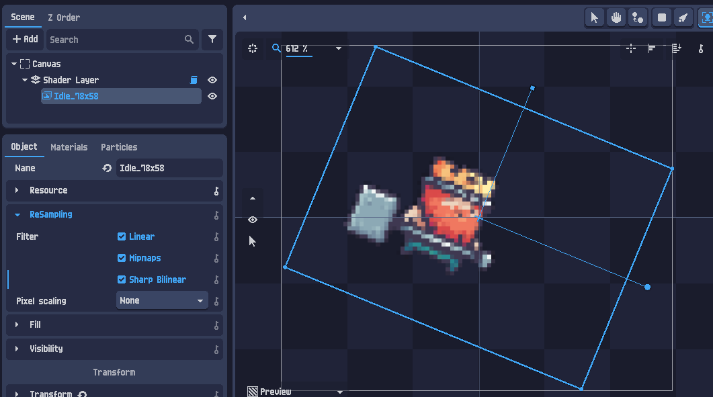
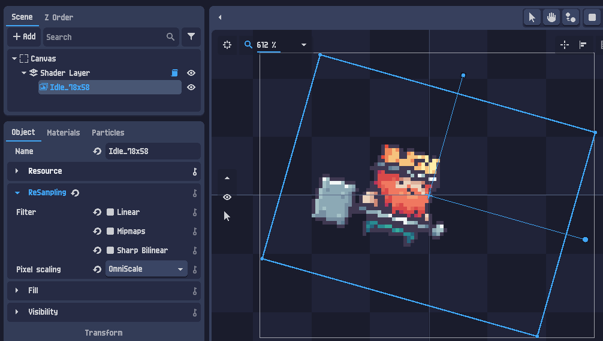
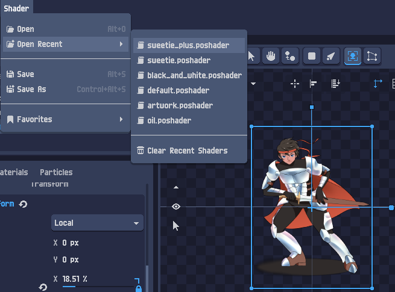
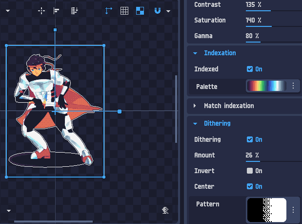

Csinálj pixel artot
bármilyen képből — PixelOver, első lépések
A PixelOver egy kis programocska, ami egy hagyományos képet (rajzot, illusztrációt, 3D rendert) pixel arttá alakít — nem a kezeddel pixelezel, hanem egy réteg-shaderrel: pixelezés, szín-indexelés (paletta), körvonal és dithering, mindezt roncsolásmentesen. Ebben a tutorialban egy rajzolt lovagból csinálunk kész pixel-sprite-ot, majd exportáljuk.
A csík automatikusan végigsöpör — pontosan ezt a transzformációt építjük fel a 7. fejezetben.
Mi az a PixelOver?
A PixelOver egy asztali alkalmazás (Windows / macOS / Linux), amivel pixel artot lehet készíteni — de nem a klasszikus „rajzolj minden pixelt kézzel” módon. A lényege: fogsz egy kész képet (egy festményt, egy karakter-illusztrációt, akár egy 3D modell renderjét), ráteszel egy shadert, és a program a képet automatikusan átalakítja pixel-art stílusúvá.
A shader egy réteg fölé tett szűrő-lánc, ami SOHA nem írja felül az eredeti képet. Bármikor visszább veheted a felbontást, kicserélheted a palettát, ki-be kapcsolhatod a körvonalat — az eredeti pixelek érintetlenek maradnak alatta. Olyan, mint a fotószerkesztőben a „kiigazító réteg”: kísérletezel, és ha nem tetszik, visszacsavarod.
Ezért a PixelOver-rel a workflow nem „rajzolj”, hanem „tölts be → állítsd be a shadert → exportálj”.
Mire jó, mire nem?
- Jó: meglévő art (kézi rajz, vektor, 3D render) gyors „pixel-artosítása”; egységes paletta ráhúzása sok képre; sprite-ok, ikonok, háttérelemek előállítása játékhoz.
- Kevésbé jó: ha a nulláról, pixelről pixelre akarsz festeni — arra a klasszikus pixel-szerkesztők (Aseprite stb.) valók. A PixelOver inkább átalakít, mint rajzol.
Ez a tutorial a hivatalos „First Steps with 2D” leckét követi, magyarul, kibővítve néhány interaktív demóval, hogy lásd is, mit csinál a shader.
A kezelőfelület — gyors körkép
Mielőtt belevágunk, érdemes átlátni a képernyő felépítését. A PixelOver projektoldala három nagy zónára oszlik, és e tutorial folyamán mindháromhoz nyúlni fogunk:
┌─ felső menü: File · Project · Shader ··············· Settings · About ─┐ ├───────────┬──────────────────────────────┬───────────────────────┤ │ SCENE fa │ │ LAYER SHADER │ │ Canvas │ VÁSZON (Canvas) │ Color / Indexation │ │ └ Shader │ – ide kerül a kép – │ Dithering / Lines │ │ Layer │ │ Filters / Effects │ ├───────────┤ [ Preview ▾ ] │ │ │ OBJECT │ │ a kijelölt réteg │ │ tulajdon- │ │ shader-beállításai │ │ ságok │ │ │ └───────────┴──────────────────────────────┴───────────────────────┘
- Scene (bal felső): a réteg-fa. Itt van a
Canvas(a „lap”) és alatta a rétegek. Innen adsz hozzá elemet a + Add gombbal. - Object (bal alsó): a fában kijelölt elem tulajdonságai — méret, pozíció, ReSampling (erről a 6. fejezetben), láthatóság stb.
- Canvas (közép): a vászon, ahol a képet látod. Alul a Preview legördülő váltogat a nyers és a shaderelt nézet között.
- Layer Shader (jobb): a kijelölt réteg teljes shader-lánca — Color, Indexation, Dithering, Lines, Filters, Effects. Itt zajlik a varázslat.
Most, hogy megvan a térkép, kezdjük az elején: csináljunk egy üres projektet.
Új projekt létrehozása
Két út vezet ide — bármelyik jó:
- A kezdőoldalon kattints a New… gombra, vagy
- a felső menüből: File ▸ New…
Felugrik a New project ablak. Kezdőként ezeket állítsd be:

| Beállítás | Mit állíts be | Miért |
|---|---|---|
| Canvas › Max size | pl. 512 × 288 | A „lap” kiinduló mérete pixelben. Mindjárt úgyis hozzáigazítjuk a képhez, szóval most mindegy. |
| Canvas › Auto Resize | On | Hagyd bekapcsolva — így a lap automatikusan a tartalomhoz méreteződik. |
| Layer › Type | 2D | Most 2D képpel dolgozunk (a 3D külön tutorial). |
| Shader › Apply | None | Most ne tegyen rá automatikusan shadert — kézzel állítjuk be a 7. fejezetben. |
Nyomd meg a Create gombot. Megnyílik egy üres projektoldal, benne a Canvas és egy üres 2D réteg (Shader Layer néven):

Canvas ▸ Shader Layer), középen az átlátszó (kockás) vászon, jobbra a Layer Shader panel. A kockás minta = átlátszó terület.Kép megnyitása
Most töltsünk be egy képet a vászonra. A hivatalos lecke a sword_man.png kardos lovagot használja — ezt a bal oldali sávból letöltheted (⬇ sword_man.png), de bármilyen saját PNG/JPG megteszi.
Kép behúzása szintén kétféleképp:
- Felső menü: File ▸ Open…, majd válaszd ki a fájlt, vagy
- egyszerűen húzd be (drag & drop) a képfájlt a projektoldalra.

Ahogy a képen is látod: a kép alapból a saját, eredeti felbontásán jön be (itt 1080×1450 px), ami sokkal nagyobb a lapnál. A következő fejezetben ezt rendezzük.
Méretezés és a vászon
Két dolgot tehetsz, hogy a kép és a lap összepasszoljon. Általában a kettő kombinációja a nyerő.
A) A kép kisebbre méretezése
Jelöld ki a képet, és húzd beljebb a méretező fogantyúkat (a kijelölő keret sarkain/oldalain lévő pöttyök). A sarok-fogantyú arányosan kicsinyít.

Size mezőiben is beírhatod.B) A vászon (lap) átméretezése
Ha inkább a lapot igazítanád a képhez: a Scene fában jelöld ki a Canvas elemet, és az Object panelen növeld a lap méretét (Page size).

Page size X/Y mezőivel nagyítjuk a lapot, amíg a kép belefér.Kicsinyítsd a képet, ha kis felbontású sprite-ot szeretnél (a pixel art lényege a kevés, nagy pixel!). Nagyítsd a lapot, ha a kép a jó méret, csak a lap kicsi. A kettő együtt: a lapot a kívánt kimeneti mérethez állítod, a képet meg beleméretezed.
Pixel art és a Resampler
Itt jön a pixel art egyik legfontosabb — és kezdőként legtöbbször elrontott — beállítása. Ha a képet elforgatod vagy felnagyítod, és elmosódottá (homályossá) válik, az azért van, mert a program „simítva” (lineáris interpolációval) skálázza. Pixel arthoz ez pont a rossz: mi éles, szögletes pixeleket akarunk.
A megoldás az Object panel ReSampling szekciójában van. Hasonlítsd össze a két állapotot:

Filter ▸ Linear, Mipmaps, Sharp Bilinear mind bekapcsolva, a Pixel scaling None → elforgatva a sprite elmosódik.
Filter kapcsoló mind kikapcsolva, a Pixel scaling pedig OmniScale → ugyanaz a sprite forgatva is éles marad.ReSampling Filter Linear ☐ KI Mipmaps ☐ KI Sharp Bilinear ☐ KI Pixel scaling OmniScale ▾ (pixel-barát nagyító)
Egy alacsony felbontású pixel-sprite felnagyítva és elforgatva. Kapcsolgasd a szűrőt, és figyeld az éleket.
A Nearest (szűrő ki) tartja a szögletes pixeleket; a Linear elkenőcsöli őket — pont ezt akarjuk elkerülni.
A réteg-shader beállítása
Most jön a lényeg: a kép pixel-arttá alakítása a Layer Shader panelen (jobb oldal). Jelöld ki a réteget a Scene fában — a jobb panel ennek a rétegnek a shaderét mutatja. A főbb szekciók:
| Szekció | Mit csinál |
|---|---|
| Color | Színkiigazítás: Hue, Brightness, Contrast, Saturation, Gamma, modulációs szín. A pixelezés előtti hangolás. |
| Indexation | A számtalan színt egy korlátozott palettára redukálja (Indexed: On + Palette). Ez adja a „kevés szín” pixel-art érzetet. |
| Dithering | Mintázott pöttyözéssel imitál átmeneteket kevés színnel (Amount, Pattern) — retró beütés. |
| Lines | Körvonalak: Outline (külső), Inline (belső) stb. — kiemeli a sziluettet. |
| Filters / Effects | Extra szűrők és effektek (Polish, Denoising, Tiled Mode, Water…). Kezdőként ezeket hagyd későbbre. |
A gyors út: kész preset betöltése
Nem kell mindent kézzel beállítanod — a PixelOver kész shader-csomagokkal (.poshader fájlok) érkezik. Töltsd be valamelyiket: Shader ▸ Open…, vagy gyorsabban Shader ▸ Open Recent:

sweetie_plus, sweetie, black_and_white, default, artwork, oil… Válaszd a sweetie_plus.poshader-t.A hivatalos lecke a sweetie_plus presetet ajánlja. Betöltés után a lovag azonnal pixel-artos lesz — korlátozott palettával, ditheringgel:

Indexation ▸ Palette), bekapcsolt Dithering (Amount 26%), megemelt kontraszt/telítettség. Ez már kész pixel art!A preset a népszerű Sweetie 16 palettára épül (GrafxKid 16 színe) — a _plus változat plusz finomításokkal. Az Indexation minden képpontot a paletta legközelebbi színére kerekít; ettől lesz egységes, „összeállt” a kép. (A részletekért lásd a hivatalos „How to Use Indexation” leckét.)
Ugyanaz, amit a PixelOver shaderje csinál, kicsiben: pixelméret + paletta-indexelés + dithering + körvonal. Tekergesd a vezérlőket!
Vedd vissza a palettát „Eredeti”-re → eltűnik a pixel-art érzet. Kapcsold ki a ditheringet → laposabb átmenetek. Ez pontosan a jobb oldali Indexation / Dithering / Lines szekciók hatása.
Exportálás
Ha elégedett vagy az eredménnyel, mentsd ki képként: Project ▸ Export…. Itt állíthatod a kimeneti formátumot és méretezést (a részletekért a hivatalos kézikönyv Export fejezete ad támpontot).
.pixelover fájlként, amit később bármikor folytathatsz vagy exportálhatsz.
Project ▸ Save → .pixelover projekt (réteg + shader, szerkeszthető) — ingyenes Project ▸ Export… → .png kész kép / sprite (a játékodba) — fizetős
Összefoglaló & merre tovább?
Gratulálok — végigvitted a teljes 2D munkafolyamatot! Röviden, amit megtanultál:
- Új projekt: File ▸ New…, Layer Type = 2D, Shader = None.
- Kép betöltése: File ▸ Open… vagy drag & drop.
- Méretezés: a képet fogantyúkkal / Object-mérettel, vagy a Canvas lap-méretét.
- Resampler: pixel arthoz Filter KI + Pixel scaling = OmniScale, hogy éles maradjon.
- Shader: Shader ▸ Open Recent ▸ sweetie_plus — Indexation + Dithering + Lines.
- Mentés/Export: Project ▸ Save (ingyenes) vagy Export… (fizetős).
- Bones animation — csont-alapú animáció: hozd mozgásba a pixel-karaktert.
- First steps with 3D — ugyanez a workflow, de 3D modellből indulva (ott a
Layer Type-ot 3D-re állítod). - How to Use Indexation — mélymerülés a palettákba és a szín-indexelésbe.
A legjobb tipp a végére: játssz a shaderrel. Mivel roncsolásmentes, semmit nem ronthatsz el — told szét a palettát, kapcsolgasd a ditheringet és a körvonalat, és figyeld, hogyan változik a kép. Pont ezt teszi fent a játszótér is.